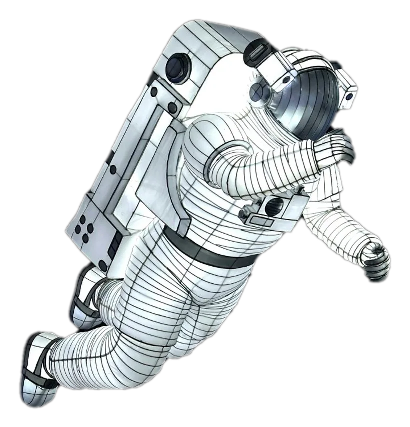
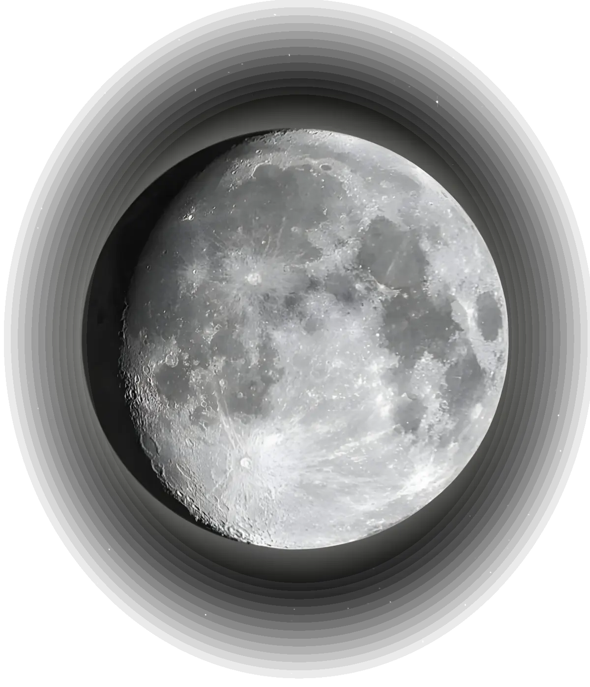

مبانی نجوم
با صورتهای فلکی، حرکت ماه و سیارهها و نقشهی آسمان از صفر آشنا میشوید و در پایان، آسمان شب را مستقل میخوانید. پیشزمینه لازم نیست.
- ۸ جلسه
- آنلاین و حضوری


کلاسهای نجوم، تلسکوپ و عکاسی آسمان شب، با مدرسان رصدگر و تمرین عملی زیر آسمان واقعی؛ برای هر سطح، از مبتدی تا پیشرفته.
از خواندن نقشهی آسمان تا تنظیم تلسکوپ؛ هر جلسه مهارتی عملی به شما میافزاید که همان شب میتوانید به کار بگیرید.
کلاس مناسب خود را انتخاب کنید یا پیش از ثبتنام، مشاورهی رایگان بگیرید.
چهار کلاس کاربردی با مدرسان رصدگر و تمرین عملی زیر آسمان واقعی؛ از مبتدی تا پیشرفته، برای هر سطح و علاقهای کلاسی در نظر گرفتهایم.
با صورتهای فلکی، حرکت ماه و سیارهها و نقشهی آسمان از صفر آشنا میشوید و در پایان، آسمان شب را مستقل میخوانید. پیشزمینه لازم نیست.
انتخاب تلسکوپ مناسب، مونتاژ و تنظیم آن را بهصورت عملی تمرین میکنید و در پایان دوره، بدون کمک مدرس زیر آسمان رصد میکنید.
ثبت تصویر ماه، راه شیری و سحابیها با دوربین و مانت ردیاب؛ از تنظیمات عکاسی تا پردازش نهایی تصویر.
رصد و ثبت سحابیها، خوشههای ستارهای و کهکشانها با تلسکوپهای بزرگتر، همراه با برنامهریزی شب رصد و ثبت منظم مشاهدات.
آموزش را کسانی انجام میدهند که سالها زیر آسمان واقعی رصد کردهاند؛ از کلاس درس تا شب رصد، کنار شما هستند.
مدرس نجوم با بیش از ۱۲ سال سابقهی تدریس. تمرکز او بر آموزش خواندن نقشهی آسمان و مفاهیم پایهی رصد است.
رصدگر و عکاس آسمان شب با بیش از ۹ سال سابقه؛ مسئول کارگاههای تلسکوپ و عکاسی و برگزاری شبهای رصد.
هر مرحله هدف و خروجی مشخصی دارد و مدرس در تمام مسیر کنار شماست.
در یک گفتوگوی کوتاه، هدف و سطح شما را میسنجیم و مناسبترین کلاس را پیشنهاد میدهیم.
در جلسات نظری، نقشهی آسمان و مفاهیم پایهی رصد را میآموزید.
تلسکوپ را خودتان مونتاژ و تنظیم میکنید؛ مدرس در هر مرحله همراه و پاسخگوی شماست.
در یک شب صاف و دور از نور شهر رصد میکنید و آموختههایتان را روی آسمان واقعی به کار میگیرید.
خیر. در کلاسهای مقدماتی تلسکوپ در اختیار شما قرار میگیرد و برای خرید تجهیزات نیز راهنمایی میشوید.
بخش نظری بهصورت آنلاین هم برگزار میشود؛ جلسات رصد حضوری و در شبهای آسمان صاف انجام میشود.
خیر. از نوجوان تا بزرگسال میتوانند شرکت کنند و برای هر سطح، از مبتدی تا پیشرفته، کلاس مناسبی وجود دارد.
رصد به نزدیکترین شب صاف منتقل میشود و هزینهی اضافهای ندارد.
برای دریافت مشاورهی رایگان و انتخاب کلاس مناسب، با ما در ارتباط باشید.